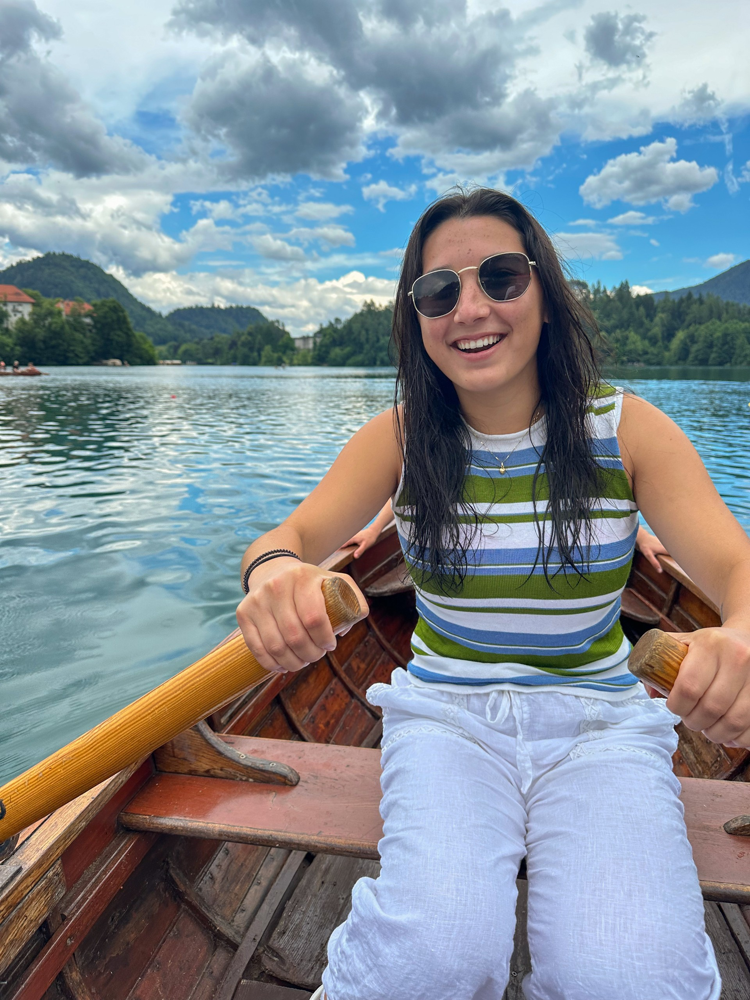

Anna Ross
Treasurer
“I joined Women in Computing during my freshman year because I hardly knew anyone in computer science, and I saw it as a great opportunity to meet like-minded people. It turned out to be one of the best decisions I made! I love being part of such a warm and welcoming community, and it’s been amazing to connect with industry leaders and grow both personally and professionally.”